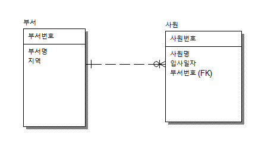

오라클 - 함수
자바 -메소드
데이터베이스 설계 과정
요구사항 분석(요구사항 정의서)-논리적인 모델링-물리적인 모델링[모델링]
구현[오라클]
사용자가 입력 매개변수
도출되는 결과값 리턴값
n대n의 관계를 1대1로 만들어주는게 행위 엔티티(테이블)
FK-외래키
부서
# deptno |
부서명 |
사원
#empno |
*deptno |
사원테이블에서 부서명이 필요할때 부서테이블에서 조인하기 위해 넘어온 키 FK(외래키)
넘어온것을 relation
*사원테이블에서는 부서번호/부서명이 필요없지만 사원테이블에서 부서명을 불러올수 있다.

학습목표
나는 부서와 사원집합에서 외래키를 추가할 수 있다.
사원 집합은 부서집합의 자식이므로 부서집합의 PK인 부서번호를 FK로 가지게 된다
select ename, dname from emp, dept
WHERE EMP.deptno=DEPT.deptno
AND emp.ename='SMITH'
결과값

부서집합과 사원집합을 비교할 때 = 비교하고
비교컬럼은 PK와 FK로 비교한다.
INSERT, UPDATE, DELETE의 반환값은 INT 이다
우리가 배우는 오라클은 관계지향형 데이터베이스 제품이다.
관계형태
1:1 EX)쇼핑몰 회원의 포인트
1:N EX)부서와 사원
N:N EX) 영화 회원. 학생과 교과목, 도서와 회원
N:N은 절대로 조인을 하지 않는다.
이유 : 업무의 정의가 덜 되었다.
두 집합 사이에는 숨겨진 업무가 있다.
이 숨겨진 집합을 찾아내는 것이 DBA가 할 일이다. - 그 업무에 대한 경험으로 알고 있다
교집합 - 원소의 갯수는 줄어든다 -> 속도향상의 원리
합집합 - 원소의 갯수는 늘어난다 -> 속도는 느리다
차집합 - 원소의 갯수는 줄어든다 ->
줄어드는 것은 로우단위
합집합 ex
select ename, dname from emp, dept
WHERE EMP.deptno=DEPT.deptno
or emp.ename='SMITH'

데이터 복구
ROLLBACK - 데이터를 원상복구
commit - 복구할수 없게 확정을 지어버림
실행계획 보는 방법
블록 잡고 ctrl+e
옵티마이저
오라클이 명령을 내린다.
사용자도 약간은 접근이 가능함
조건
점 : 일정 지점 =
선분 : 일정 구간 <> >= <=
select 컬럼
from 집합이름
같은것을 찾을때는 index를 사용할수 있지만 부정으로 검색할경우에는 사용할수 없다.
선분조건
like 연관된것 전부 찾아달라
와일드카드 %
우리회사에 근무하는 사원중에서 급여가 2500불 이상인 사원의 이름과 급여액을 출력하는 sql문을 작성하시오.
문제 뜻을 분석
집합이름은? 사원집합 - emp
어떤 정보를 보여줘야하나? 이름과 급여, ename, sal
결과는 어떤 폼으로 보여줘야하나?
원하는 조건이 있는가?
select ename, sal from emp
where sal>=2500
문제2
우리 회사에 근무하는 사원들 중에서 부서번호가 20 혹은 30번 부서에 근무하는 사원들의 사원명, 부서번호, sal를 출력하는 sql문을 작성하시오
select ename, deptno, sal from emp
where deptno=20
or deptno=30
select ename, deptno, sal from emp
where deptno in(20, 30)
인센티브 받는 사원들의 이름 ,금액을 출력하는 sql문을 작성하시오
select ename, comm from emp
where comm is not null
and comm !=0
차집합
select ename, comm from emp
minus
select ename, comm from emp
where comm =0
minus
select ename, comm from emp
where comm is null
테이블 스캔을 여러번 해서 효율성이 떨어진다.
필요한 경우도 존재한다.
daul: 컬럼하나에 로우 하나짜리 가상 테이블(테스트용 가상 테이블)
select sysdate from dual

select sysdate, to_char(sysdate,'yyyy'), to_char(sysdate,'day) from daul
to_char 문자열로 표시
select 다음에 컬럼명 외에도 연산자가 올수도 있다.
select 와 from 사이에 컬럼이 온다
select 와 from 사이에 사칙연산이 가능하다.
select 와 from 사이에 함수를 사용할 수 있다.
select 와 from 사이에 컬럼을 추가하면 테이블의 오른쪽이 늘어난다.
테이블의 아래를 늘리기 위해서는 insert를 사용해야한다.
업무담당자는 테이블 구조 그대로 보여주기를 바라지 않는다.
목적에 따라 사용하는 집합이 달라진다
오라클은 -- 가 주석
전체주석 ctrl + b
and : 전부 만족하는 것
or : 하나만 만족하는 것
not : 반대값을 나오게한다.
between : 구간을 검색해준다.
in : 칼럽의 값이 하나라도 일치하면 참이 된다. or 와는 다르게 점조건이다.
like+%: 와일드 카드로 어떠한 값이 와도 상관없다.
like+_ : 문자하나는 어떤게 와도 괜찮다
select * from emp
where ename like'S%'
sal이 1500 이상 부서번호가 20 인 사원의 이름 부서명
select ename, job from emp
where sal>=1500
and deptno=20
부서번호가 20이거나 커미션을 받는 사원의 이름
Select ename, comm from emp
Where comm is not null
And comm!=0
Or deptno=30
널이 없거나 0이거나 부서번호가 30인것을 출력
boolean : 참 거짓을 나타내는것
타입 이름;
is~ : boolean 타입이라고 생각하면됨
1= true
0= false
if 문 : 흐름
if (조건문) : 참인지 거짓인지 식별할수 있어야한다
1=1(x)
1==1(o)
int i = 1;
int j = 2;
i = j;
i = boolean
형전환
to_char(sysdate) : 날짜타입
sysdate : 날짜타입을 문자타입으로 형전환
강제 형전환
int i=(int)3.14; : 값 앞에 (변환되는 결과) 쓰면 형전환 : 캐스팅 연산자
형태에 맞게 크기 모양을 변환시키는것
나머지 값은 유실된다
캐스팅연산자는 강제형전환 할때만 필요하다.
오른쪽이 왼쪽보다 값이 클때 사용
자동 형전환
작은걸 큰곳에 넣을때 형태가 바뀌는것
ex) short -> int 로 되는것
100% 들어온다
왼쪽이 값이 클때 사용
int i = 1;
short s = 2;;
i=s
println(타입); ln 줄바꿈이 일어남
print(); 옆으로 나열함
메소드
- 제공되는 메소드
- 사용자가 정의하는 메소드
같은 이름의 메소드를 여러개 가질수 있다.
단 타입이 달라야한다.
method over loading
메인메소드는 실행하기 위해서는 반드시 필요하다.
메소드를 호출하기 위해서는 타입을 맞춰야한다
package com.ch2;
public class booleanEx {
static void methodA(boolean(변수타입) isOk(변수명)) {
System.out.println(isOk); (여기까지 메소드를 만드는 작업)
(println역활을 하는 메소드를 만든것 위에 변수타입을 가지고있는 값을 출력)
}
public static void main(String[] args) {
methodA(1==1);(위에 메소드를 실행)
if(1==1) //괄호안에 boolean타입이 온다.
{
System.out.println("참");
}
}
}
args방안에 데이터 집어넣는 방법

0방에 이순신 1방에 유승기 2방에 정지우 들어감

변수의 종류 (위치에 따라 달라진다)
- 전역변수(member variable, global variable)클래스 전역에서 사용이 가능하다 / 초기화를 안해도 된다
- 지역변수(local variable, automatic variable)- 반드시 초기화를 해야한다. 초기화는 호출할때 된다
- 지역변수는 메소드 안에서 선언해야한다.
- 메소드 안에서 선언한건 전부 지역변수
메모리 영역
ram
stack(지역변수) 공간이 작아 임시로 저장한다
heap(전역변수) 공간이 크다
- static변수 : 값을 공유하는 것
지역변수의 선언 위치?
호출할때 초기화를 한다.
package com.ch2;
public class isiidiid {
String st = "상태창";
int lev = 1;
void st1(String st) {
System.out.println("유저의 "+st+"을 오픈합니다");
}
void levelup(int lev) {
lev = lev+1;
System.out.println("레벨이 "+lev+"가 되었습니다");
}
public static void main(String[] args) {
isiidiid game = new isiidiid();
System.out.println(game.st);
System.out.println(game.lev);
game.levelup(2);
game.st1("상태창");
game.st1("스킬창");
}
}
package com.ch2;
public class Sonata {
int whellNum = 4; //전역변수 계속 유지된다
int speed = 0;
String carcolor = "Red";
void move(int i) {//지역변수는 반드시 초기화를 해야한다
speed = speed+1;
System.out.println("지역변수 i는 "+i);
}
public static void main(String[] args) {
//메소드 호출하기
Sonata mycar = new Sonata();
//바퀴수 몇개?
System.out.println(mycar.whellNum);
System.out.println(mycar.carcolor);
mycar.move(4);
}
}
package com.ch2;
public class Sungjukapp {
// void가 없을땐 반환값이 있다. 있으면 있는지 없는지 모른다
/*
* 메소드의 리턴 타입이 필요한 경우 - void를 사용하면 안된다
* 왜냐하면 유지되지 않기 때문이다
* 왜냐하면 stack영역에 사는 변수이기 때문에 자동으로 소멸된다
* 필요없을 때 - 그 메소드의 실행결과가 다른 메소드에 사용될 필요가 없으면 void
* 메소드의 존재이유 - 무언가 행동을 하기 위해
*/
double total() {
return 85;
//System.out.println("total메소드 호출 성공");//실행문
}
public static void main(String[] args) {
Sungjukapp sjapp = new Sungjukapp();
sjapp.total();
System.out.println(sjapp.total());//85
}
}
package com.ch2;
public class variable_1 {
//non-static타입의 변수는 static영역에서는 사용이 불가능하다
//해결 방법이 있다. - 인스턴스화를 하면 가능하다
int i=100;//전역변수 다른 메소드에서도 사용이 가능한것
int a=100;
//초기화등 한번에 써야한다.
//전역변수는 초기화를 생략할수도 있다.이유? 생성자가 대신 한다.
void methodA() {//non-static이라 static영역에서 사용불가
//지역변수는 반드시 초기화를 해야한다. 안하면 컴파일 에러가 일어난다.
int i;//이건 지역변수
i=10;
System.out.println(i);
}
void methodA(int i) {//메소드의 파라미터 자리에도 지역변수를 선언할 수 있다. 선언할땐 타입이 필요 사용할땐 불필요
System.out.println(i);//초기화를 안했다면 전역변수 i 전역변수는 호출할때 초기화가 일어난다.
}
void methodA(String id, String pw) {//파라미터의 타입이 다르거나 갯수가 달라야한다.
System.out.println(id+" "+pw);
}
public static void main(String[] args) {
variable_1 vt = new variable_1();//heap영역안에 집어넣는것
//non-static의 변수를 static에서 불러오기 위해 필요한 명령문
vt.methodA();//메소드 호출하기
System.out.println(vt);//vt를 출력하면 주소가 찍힌다. 16진법으로 찍힌다.
System.out.println(vt.i);//앞에 vt를 붙이면 가능하다
vt.methodA(45+50);
vt.methodA("kkkk", "wee22");
System.out.println(vt.a+vt.i);
}
}
package com.ch2;
//이 코드는 메인메소드의 파라미터인 string[] args에 대해 알아보기 위함이다.
//메인메소드는 클래스 안에 있는 모든 코드들 중에서 가장 우선순위가 높다
//메인메소드는 개발자가 호출하는 메소드가 아니다. -누가? 자바가상머신(JVM-jdk1.8)
//print메소드는 개발자가 호출하는 메소드가 맞다.
//메소드를 선언하는 것과 호출하는 것의 코드의 차이점 - 발견
//선언 {}, 호출(); 차이
//메인메소드를 호출하는 것은 가상머신이 자동으로 한다- 콜백메소드 라고 한다.
/*
* 이클립스가 없다면
* 컴파일을 요청하는 명령어를 직접 작성해야 합니다
* javac MainTest.java -> MainTest.class(기계어)
* 실행
* java MainTest 이순신 유승기
* 이 클래스 안에는 전역변수가 없다.
* 지역변수는 있는가? 네 - boolean
*/
public class maintest {
//전역변수 선언 위치는 여기
public static void main(String[] args) {
//파라미터에 있는 변수의 이름은 args이고
//타입은 배열이다.
String name = args[0]; //0번방에 있는 숫자를 대입해 주세요
//name가 지역변수
name=args[1]; //0부터 방을 만든다. 값을 집어 넣음
//주소번지가 시작과 같기에(차이가 없기에) 0번방부터 집어넣는다.
System.out.println(args[0]);
System.out.println(args[1]);
}
}
ackage com.ch2;
public class booleanEx {
/*
* 아래 코드는 메소드를 선언하는 코드임
* 메소드를 선언할 때 파라미터 자리에 변수를 선언할 수도 있음
* 이 메소드에서 선언한 변수 이름은 isOk이고 타입은 boolean으로 선언함
* 메소드를 선언할 때는 아래와 같이 파라미터(매개변수)를 추가할 수 있음
* 선언한 메소드는 호출할 수 있음
* 클래스 안에서 어디서든 호출 할 수 있음
* 단 메소드 안에서만 가능함
* 메소드 밖에서는 호출할 수가 없음
* main 메소드에서 호출한 이유는 메인 메소드가 entry point이기 때문
* 클래스 안에 작성된 코드중에서 가장먼저 실행되는 코드
* 다른 코드는 호출하기전까지는 가지고는 있지만 실행은 절대 안됨
* 실행하도록 하려면 반드시 메소드를 호출해야함
* 호출할때 주의사항이 있음
* 반드시 파라미터의 갯수와 타입을 꼭 맞추어야 함
* 메인 메소드에서 if문을 사용한 이유는 boolean타입을 언제 사용하는 것인지 보여주는것
* if문은 조건을 만족했을 때 좌중괄호와 우중괄호 안에 있는 코드를 실행함
* 만일 거짓이라면 그안에 있는 코드는 실행 기회를 갖지 못함
* 클래스 안에 다른 코드들을 얼마든지 작성할 수는 있지만 가지고 있다고 해서 모두 다
* 실행되는 것은 아님
* 반드시 불러주어야 실행되는 것임
*/
static void methodA(boolean Ok) {
System.out.println(Ok);
}
public static void main(String[] args) {
methodA(1==3);
if(1>0) //괄호안에 boolean타입이 온다.
{
System.out.println("참");
}
}
}